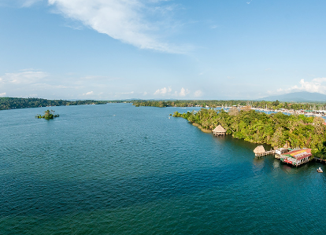
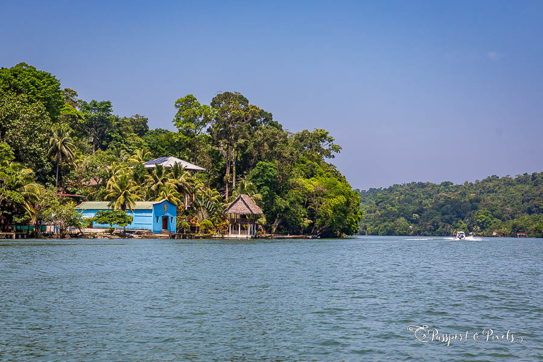

El Río Dulce es uno de los lugares históricos y naturales más importantes de Guatemala. Su historia está ligada al comercio, la colonización española y la comunicación entre el interior del país y el mar Caribe.
Río Dulce es un espectáculo natural donde la selva tropical se refleja en aguas tranquilas y profundas. Navegar por sus riberas es adentrarse en un ecosistema único, lleno de manglares, garza blanca y delfines de agua dulce. Su imponente garganta rocosa, de paredes de hasta 100 metros de altura cubiertas de vegetación, es uno de los paisajes más impresionantes de Centroamérica.
Paseos en lancha, kayak, visita al Castillo de San Felipe, pesca deportiva, avistamiento de fauna, visita a comunidades Garífunas.

